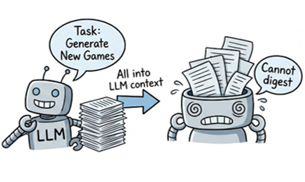
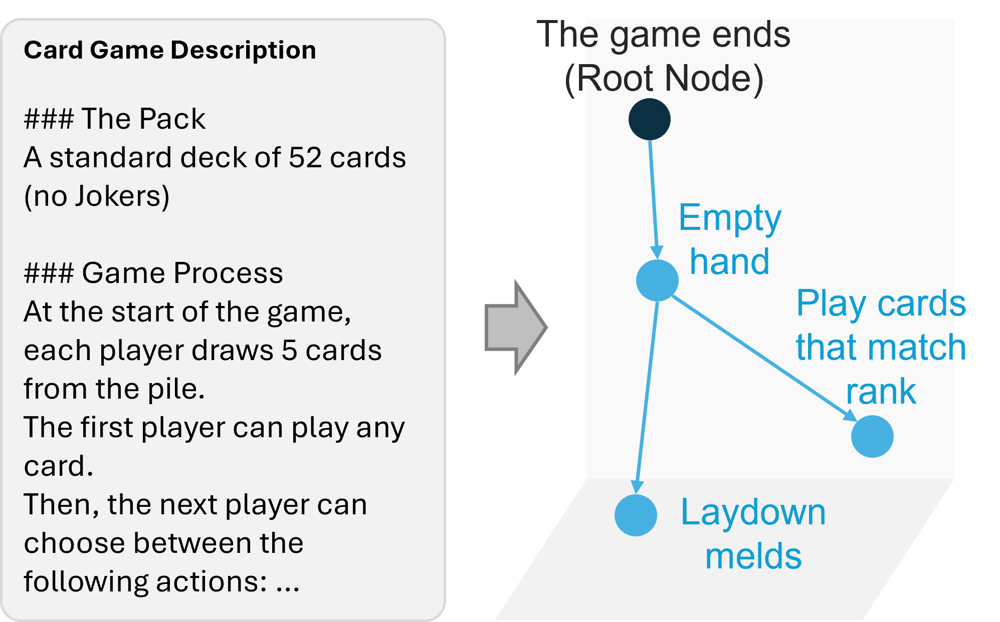
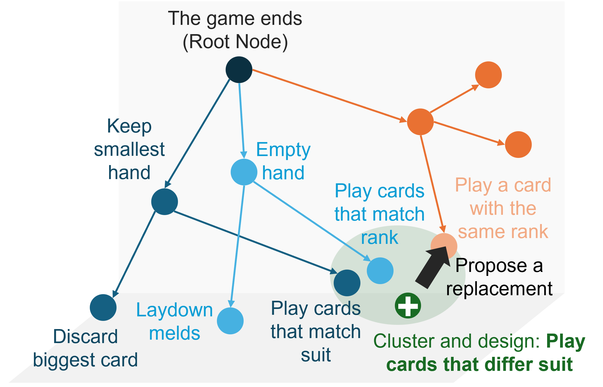
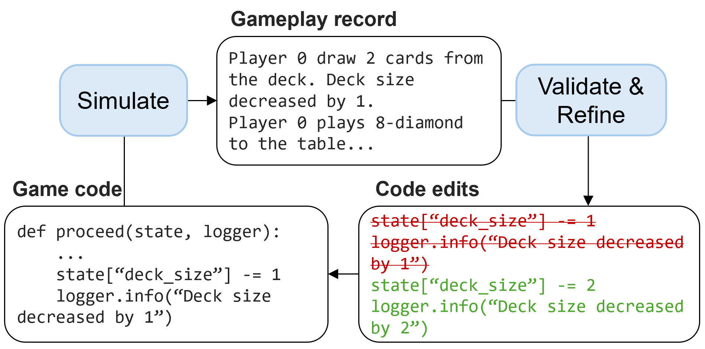
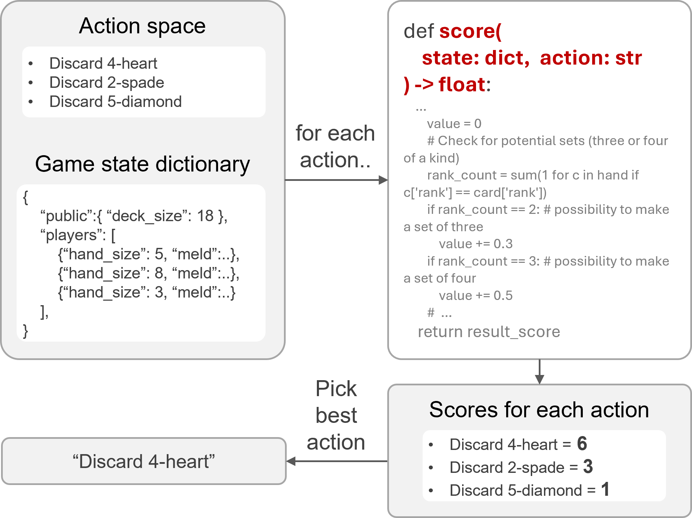
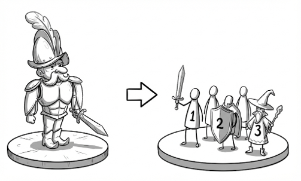
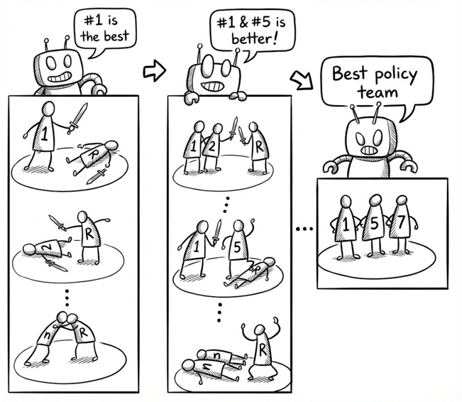

The prototyping of computer games, particularly card games, requires extensive human effort in creative ideation and gameplay evaluation. Recent advances in Large Language Models (LLMs) offer opportunities to automate and streamline these processes. However, it remains challenging for LLMs to design novel game mechanics beyond existing databases, generate consistent gameplay environments, and develop scalable gameplay AI for large-scale evaluations. This paper addresses these challenges by introducing a comprehensive automated card game prototyping framework. The approach highlights a graph-based indexing method for generating novel game variations, an LLM-driven system for consistent game code generation validated by gameplay records, and a gameplay AI constructing method that uses an ensemble of LLM-generated action-value functions optimized through self-play. These contributions aim to accelerate card game prototyping, reduce human labor, and lower barriers to entry for game developers.

Given a library of card game descriptions, while we could just prompt LLMs to design new games (i.e. different from existing ones) by feeding all descriptions, this approach creates overload to LLM reasoning. We need to break down and digest the data first.

To break down game concepts, we use LLMs to convert game description texts to game mechanic graphs that describe the dependencies between atomic game mechanics.

For all mechanic graphs generated from the library, we cluster similar nodes and use LLMs to design new game mechanic instances. Then we can mutate any game input using new instances.

Cardiverse uses an iterative refinement loop to align game environment to game description:

Instead of calling LLMs at each game decision, Cardiverse formulates the gameplay AI as a heuristic Python function that scores potential game actions based on game state features.

To efficiently optimize the policy behind the heuristic function, we break one big heuristic function into smaller, more manageable components. Then we directly optimize the ensemble of components.

We adopt a step-wise-inclusion method, where we progressively add one more component to the heuristic ensemble as the final optimized policy.
Try playing the demo game with Cardiverse-generated AI opponents! The source code for the demo game is available in the website branch of the Cardiverse GitHub repository.
@inproceedings{li-etal-2025-cardiverse,
title = "Cardiverse: Harnessing {LLM}s for Novel Card Game Prototyping",
author = "Li, Danrui and
Zhang, Sen and
Sohn, Samuel S. and
Hu, Kaidong and
Usman, Muhammad and
Kapadia, Mubbasir",
editor = "Christodoulopoulos, Christos and
Chakraborty, Tanmoy and
Rose, Carolyn and
Peng, Violet",
booktitle = "Proceedings of the 2025 Conference on Empirical Methods in Natural Language Processing",
month = nov,
year = "2025",
address = "Suzhou, China",
publisher = "Association for Computational Linguistics",
url = "https://aclanthology.org/2025.emnlp-main.1511/",
doi = "10.18653/v1/2025.emnlp-main.1511",
pages = "29735--29762",
ISBN = "979-8-89176-332-6"
}